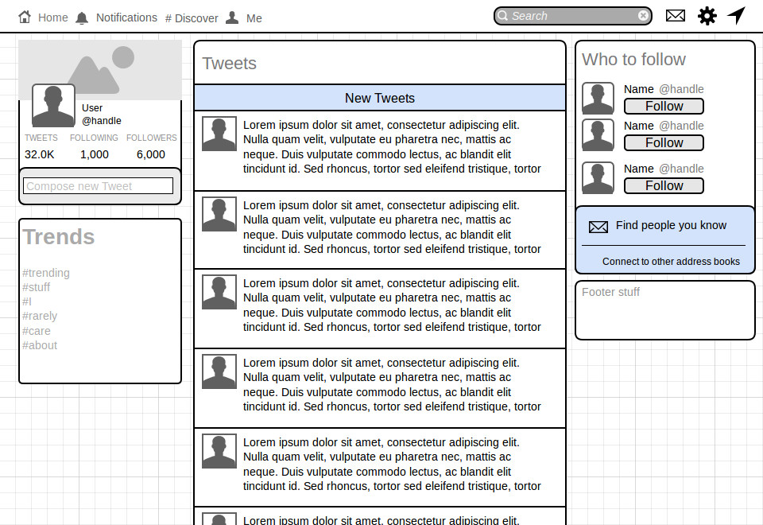

A More Detailed Look at The Twitter Webclient
Sunday, July 20th 2014
Wireframing and Design Thinking
Well, I'm really not sure what problem Twitter is solving, or what "visual challenge" even means, but I can at least talk a bit about my thoughts on design thinking and wireframing. I'm having some trouble reconciling design thinking, which is as far as I can tell a methodical approach to problem solving, with actual front-end design. The way this question is worded ("What problem is the web page solving?") implies that all web pages solve a problem. To me, that just isn't true. Like social media for instance. I don't see them as solving a problem. You could say that they help connect people together, but I don't really consider that a problem, more of a convenience. And what about this blog, or thousands of other blogs? Some provide useful information on a specific topic, but what about the random ramblings over the author's daily life? I don't really see any problem that particular page would be solving. That being said, I do agree that design is an extremely important part about a website, and this can be make-or-break for a lot of businesses.
This brings us to wireframing, which a great way to lay down the foundations of the website. The way I see it, wireframing is to the front-end dev what pseudo-code is to the back-end dev. It gives you an overall view of the project without getting bogged down with the details. It's pretty awesome to have access to these great wireframing tools, and even a simple pen&paper sketch will do wonders to communicate the vision you have. I had some fun making this one (shoutouts to moqups). 